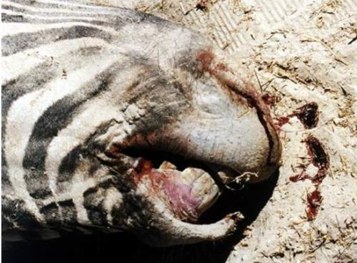
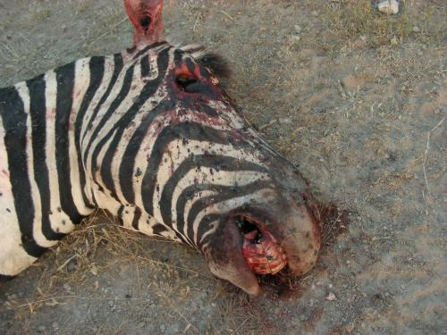
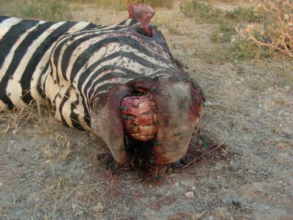
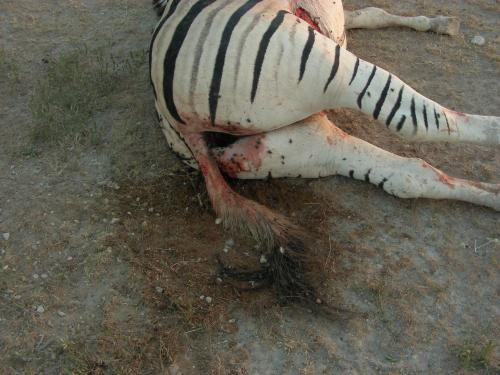
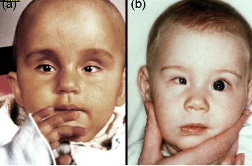

Zoonotic diseases
{kind=link}
Zoonotic diseases are diseases that can be transferred from animals to human beings or from humans to animals.
Humans can act as carriers of the diseases and spread them as well as be affected and die in case of the more serious ones like Anthrax, Brucellosis, Rift Valley Fever, Tuberculosis etc.
Introduction
- Anthrax
- Bovine Farcy
- Brucellosis
- Hydatid cysts
- Influenza - avian flu, swine flu etc
- Leismania
- Leptospirosis
- Mad cow disease
- Mange
- Orf
- Pseudo cow pox
- Q fever
- Rabies
- Rift Valley Fever
- Ringworm
- Salmonellosis
- Taeniasis - tape worms
- Tetanus
- Toxoplasmosis
- Tuberculosis
Anthrax
Luo: Aremo / Embu: thita / Kamba: ndulu / Gabbra: chimale, chirrmalle / Kikuyu: Muriru / Kipsigis: bursta / Nandi: purasta / Maasai: Emburwo, ol akirikir, ol ogereger, em bjangat, eng eanairogua / Maragoli:likenji / Samburu: lokuchum, nokulupo / Somali: kut, khut, kud, baargariirshe / Swahili: kimeta, imetha / Turkana: enomokere, lolewe, lookot, lotorob, lokuchum / Iteso: atular / Luidakho:lishenji / Luvugusu: muyaka /
fievre charbonneuse, charbon (French) carbunco bacteridiano (Spanish)
Zoonotic disease
| WARNING: Notifiable disease! If you suspect an animal has anthrax, you must inform the authorities immediately. Animals suspected of having died of anthrax should not be opened. |
Mode of spread
- Feed contaminated with bone, or other meal from infected animals, can serve as a source of infection for livestock, as can hay that is heavily contaminated with infected soil.
- Infection is influenced by communal watering points. Water holes used by different species of animals are known to be a source of infection.
- Flooding may expose previously buried spores and agricultural practices may do the same.
- Tissues of infected animals may be moved by rats and carrion eaters and transfer infection.
- Raw or poorly cooked contaminated meat is a source of infection for carnivores and omnivores, including humans.
- In animals, infection is usually by eating infected grass, less commonly by breathing spore infested dust or through open wounds. In cattle, sheep and goats infection is nearly always by mouth.
- In camels and horses biting flies may transmit infection and this may explain the swellings sometimes seen on the body and legs of these species.
- Humans are fairly resistant and are infected after an occupational hazard affecting workers in tanneries. The workers may inhale spores and suffer an acute fatal pneumonic form of anthrax. Cutaneous anthrax is common among people who carry meat and other animal products from infected carcass. The bacteria can survive for several years in livestock products such as hides, wool and bones.
- Infection in humans is usually via skin abrasions or by inhalation. People handling wool, hides and skins are mostly at risk. Eating infected meat obviously carries a major risk, although rapid cooking quickly destroys the organism before the highly resistant spores have a chance to develop. There has been cases reported in Kenya where people have eaten meat from infected animals and died shortly afterwards.
Diagnosis
It is very risky for unqualified laboratory personnel to take samples of the disease. The sampling procedure should be carried out by qualified laboratory personnel only.
|  |
| Anthrax |
| (c) Peter C.B. Turnbull
|
|  |
| Anthrax |
| (c) Peter C.B. Turnbull
|
|  |
| Anthrax |
| (c) Peter C.B. Turnbull |
|  |
| Anthrax |
| (c) Peter C.B. Turnbull |
Anthrax can be a very severe food borne pathogen and must at all means be prevented from entering any food or feed.
- Picture: Suspected anthrax case: A pig with signs of Anthrax is enclosed in a plastic bag to prevent loss of body fluids before a smear of fluid from an appropriate site is taken
- The carcase of any animal suspected to have died of Anthrax should not be opened but must instead be burnt or buried at a depth of at least 2 meters, and the surrounding area burnt and treated with 10% formalin or 10% caustic soda to prevent contamination of the environment. The surrounding area where the carcass has been burned should be fenced off.
- Signs after death:
- Carcass is stiff and bloated
- Decomposition is rapid
- Bleeding from ears, mouth, nose, anus or vagina
- Blood is dark and does not clot - Contaminated beddings, premises and feeds should be destroyed or thoroughly disinfected.
- Vaccination of all livestock at risk should be done annually as a legal requirement. The avirulent live Sterne- strain spore vaccine, which has lost its ability to form capsules, is available in most countries and offers annual protection. In Kenya a commercially available product called "Blanthax" is used for the annual vaccinations against Black quarter and Anthrax.
- Quarantine should be imposed in all infected areas to prevent movement of animals into and out of such areas. Such quarantine should be not lifted until at least 6 months after disinfection procedures are complete.
- The appropriate authorities must be notified.
- General sanitary measures must be observed by all persons handling diseased animals, both for their own safety and to prevent spread of the disease.
- Scavengers, including dogs, jackals and birds, must be controlled and kept away from dead animals to minimise spread of infection.
Recommended treatment
Bovine Farcy
Scientific name: Bovine nocardiosis
Brucellosis
Contagious abortion, Bang's disease, In humans also called Undulant fever and often confused with malaria or influenza
Brucellosis is a bacterial infection, caused by organisms belonging to the genus Brucella.
Spread to man
- Man becomes infected when in direct contact with cows at abortion, calving or in the post calving period.
- Vets and stockhandlers are particularly at risk from the splashing of infected droplets into the eye.
- Handling of the afterbirth without wearing gloves is very dangerous. Afterbirth of infected animals should be buried immediately and not handled directly by anyone.
- Infection occurs in people drinking unpasteursied milk or milk products.
- Symptoms in humans include recurrent bouts of fever, headache, muscle and joint pains and and general weakness. Women also abort. Brucellosis is often confused with malaria and influenza. Diagnosis is done through a blood sample taken by the doctor, and treatment is usually a very expensive 3 month on antibiotics
Diagnosis
- Serum samples should be taken for agglutination testing.
- When abortion occurs, aborted fetuses should be taken intact in a sealed container to the laboratory for detailed examination. The organisms can be found in the placenta but more conveniently in pure culture in the stomach and lungs of an aborted foetus. All foetuses and afterbirths should be handled carefully with gloves to avoid human infection.
Prevention and Control
- The disease can be controlled through effective sanitary measures in the cattle environment. Pregnant animals must be closely observed and any which show signs of aborting must be immediately isolated.
- Any animal which has aborted must be kept isolated until all uterine discharges have stopped. If there is any suspicion of infection, any animal about to calve should also be isolated.
- Under cool conditions the organism may survive for up to 2 months. Exposure to direct sunlight kills the organisms within a few hours.
- The use of plastic gloves and thorough disinfection of the vulva and tail of cattle helps greatly to reduce the risk of infection when examining pregnant animals.
- Because of the danger of human infection, infected fetuses, placenta and cows should be handled with great care. Proper hygienic precautions should be taken when handling abortions and where infection is known to occur in certain herds of cattle. Handlers of such material should always wear gloves for protection. They should also ensure that they keep their hands away from the mouth, nose and eyes until after the hands are thoroughly disinfected.
- Burn or bury all contaminated materials such as foetuses and foetal membranes
- Clean and disinfect all cattle premises which may be contaminated with foetuses and foetal membranes.
- Drinking of raw milk and unpasteurized milk products should be prohibited
- Pasteurisation of milk and milk products makes them safe for consumption.
Vaccination
- Calves between three and eight months should be vaccinated with live vaccine (S.19) to prevent infection. Such vaccinations can provide lifelong immunity against all but the heaviest challenge.
- The live vaccine should be used with care in adult animals because it can cause abortion in in-calf females and inflammation of the testes in adult males. It also results in persistent antibody titres if used in adults, making differentiation between antibody levels due to natural infection and vaccination very difficult Adult cattle should therefore be vaccinated annually with dead B. abortus vaccine (45/20), or a with a reduced dose - one twentieth - of S19 vaccine.
- S19 vaccine should be handled with care. It is a live vaccine and can infect humans.
- Vaccination will reduce the number of infected animals in a herd by by over 90% if carried out over a period of 5 years. Vaccination cannot eradicate Brucellosis but it can lay the groundwork for future eradication.
- Bulls should not be vaccinated as the vaccine may result in the organism appearing in the semen.
Recommended treatment
Hydatid cysts
Influenza - Bird Flu - Swine flu
(under construction)
Leishmaniasis
A skin disease of humans and in other parts of the world - dogs. In Africa it is mainly transmitted by sandflies, and dogs seem to be less affected.
- Skin (Cutaneous) Leishmaniasis.
- In some parts of the world the infection may spread to the lymph nodes, other areas of skin and to mucocutaneous junctions- this type is called Espundia or Lymph node (Mucocutaneous) Leishmaniasis.
- The final type is one in which spread occurs throughout the body and this is called Visceral (affecting soft internal organs) Leishmaniasis or Kala-azar. The name Kala-azar derives from Asia and means "black fever" and refers to the darkening of the skin which may occur in fair-skinned people, when they contract Visceral Leishmaniasis.
Leptospirosis
Mode of spread
Signs of Leptrospirosis
Clinical Signs
- The incubation period is usually 5-7 days. The symptoms in severe cases are those of acute septicaemia (blood poisoning) as well as fever, lack of appetite, acute anaemia (lack of blood seen in pale gums and underside of eyelids), severe jaundice and the passage of urine whose colour may range from a light-brown yellowish colour, to bright red, to almost black in some cases.
- The most severe cases usually occur in young animals, but with some serotypes, such as L. pomona , L. grippotyphosa, L. icterohaemorrhagiae and L. autumnalis adults may be also acutely affected.
- The teats are often red and inflamed. Milk flow usually ceases and there is a secretion that is red-coloured or contains blood clots. The udder is soft and limp. All four quarters of the udder are affected. There is no inflammation of the udder and the changes are due to a general vascular lesion rather than local injury to the mammary tissue.
- A skin inflammation frequently occurs in the white areas of the skin due to extreme sensitivity to light caused by liver damage.
- The animal may stamp its feet in discomfort. The muzzle may be dry, reddened and crusty and the vulva a reddish-purple colour.
- Subacute cases caused by L. pomona differ from acute cases only in degree. The fever is usually milder, but depression, lack of appetite, rapid breathing and a degree of blood in the urine still occur. Jaundice is not always present.
- Abortion may occur 3-4 weeks later, together with the characteristic drop in milk yield and the appearance of blood-stained or yellow-orange, thick milk in all four quarters, without physical change in the udder.
- In chronic cases signs are mild and may be restricted to abortion in the last third of pregnancy. Abortion "storms" may occur in groups of cattle at the same stage of pregnancy exposed at the same time to infection.
- Stillbirths and premature live births of weak calves may occur up to 3 months, and occasionally longer, after the acute stage of infection.
- Leptospirosis caused by L. hardjo occurs only in pregnant or lactating cows because the organism is restricted to growing in the pregnant uterus and the lactating mammary gland. There is sudden onset of fever, lack of appetite, and a cessation of milk yield, with a flabby udder and yellow to orange milk containing clots. The udder is non-painful. Up to 50% of animals in a herd may be affected. Abortion may occur several weeks later. Later, as natural immunity develops in adult cows, infection is restricted to heifers which show abortion only, with no mastitis.
Diagnosis
- At post-mortem examination severe jaundice, when present, is very striking. The entire carcass may appear extremely yellow, almost orange in some cases.
- There may be ulcers and haemorrhages in the abomasal mucosa, the liver may be swollen and the pattern of lobulation may be abnormally distinct.
- The kidneys may be enlarged, with the cortex a reddish-brown mottled colour.
- Urine in the bladder may be coloured red or even black.
- In chronic cases, large numbers of white spots may be seen in the kidneys.
- The identification of leptospires is difficult as they are very fragile and do not survive long in a decomposing carcass. A fluorescent antibody technique may be used, but the most commonly used method is by the demonstration of antibodies using the microscopic agglutination test by taking paired serum sample 7-10 days apart and showing a rising titre of antibodies. Serum samples will be taken by an attending veterinarian for dispatch to a laboratory. Several animals should be sampled as individual samples may be difficult to interpret. In addition milk and urine samples should also be taken for analysis.
Differential Diagnosis
- Leptospirosis should be differentiated from Babesiosis (Redwater), Anaplasmosis, Acute Haemolytic Anaemia which occurs in calves after drinking large volumes of cold water, Chronic Copper Poisoning, Rape and Kale Poisoning and in the less acute cases, differentiation from other causes of abortion.
Treatment
- This must be started early to prevent irreparable damage to liver and kidneys and to prevent the development of the carrier state.
- Streptomycin is the drug of choice in the control of infection, but one of the tetracyclines may also be effective.
- In acute infections streptomycin is given for 3 consecutive days at a rate of 25mg/kg bodyweight daily.
- A single injection of 25mg/kg dihydrostreptomycin is effective in eliminating urinary tract infections.
- No treatment is successful once a haemolytic crisis has developed.
- Vaccination with or without antibiotic therapy (dihydrostreptomycin at 25mg/kg to all cattle in the herd) offers an effective method of preventing and controlling infection in cattle herds.
- In closed herds vaccination of all members of the herd should be carried out annually while in open herds vaccination should be carried out every 6 months.
- The vaccine should be a multivalent one giving protection against those serotypes diagnosed or locally endemic. In a few animals, vaccination may fail to prevent colonization of the renal tubules and the development of a carrier state.
- In addition to vaccination steps should be taken to avoid animal contact with infected surroundings. Damp areas should be fenced and pens disinfected after use by infected animals.
- Cattle should be separated from pigs and wildlife. Rats and other rodents should be controlled.
- Replacement stock should be selected from herds which are sero-negative for leptospirosis and replacement stock should be vaccinated and treated with streptomycin.
Bovine Spongiform Encephalopathy ( Mad Cow Disease)
Apart from cattle BSE has been transmitted experimentally to several other species, including mice, pigs, sheep, goats, mink, monkeys and marmosets. During the British epidemic cases of BSE occurred in small numbers of captive ungulates - nyala, gemsbok, eland, oryx, kudu, Ankole cow and bison - and in five species of wild cat - puma, cheetah, ocelot, lion and tiger - either kept in, or originating from, British zoos. The ungulates were infected from the same food source as cattle and the cats, including a small number of domestic cats, were most likely infected by eating infected bovine tissue.
Cause
Transmission
Clinical Findings
Diagnosis
- There is no treatment.
- Control has been effected in Britain and other European countries by banning the use of any tissue from warm blooded animals in the rations of all farm animals. Animal protein, including that derived from birds, should NEVER be fed to livestock.
Zoonotic Risk
Mange
Orf
See under Skin Problems
Pseudo cow pox
See under Skin Problems
Q-fever
For complete description please read under Abortion and Stillbirth.
Q Fever was first identified in Queensland, Australia; hence its name. Q Fever is a disease passed to humans from sheep. People working around domestic sheep should consider getting vaccinated against this disease. The disease can be acquired from the inhalation of aerosolized barnyard dust should it contain infected dried urine, manure particles, or dried fluids from the birth of calves or lambs or through tick bites or by drinking raw milk.
Rabies
Luo: Tuo swao, Rabudi, swawo / Swahili: Kichaa cha mbwa / Turkana: long'okwo, arthim, nkerep, nkwang' / Somali: ramis, nyanyo, waalan, walan / Samburu: nkuang, nkwang / Maasai: Olloitirwa LolLdien, enkeyian orki, enkeya oldian / Meru: nthu cia kuuru / Maragoli: bulalu vwa tsimbwa / Gabbra: nyanye, aidurr / Kamba: mun'gethya, nduuka ya ngiti / Kipsigis: miotap ngokto /
hydrophobia, lyssa, rage (French), rabia (Spanish) Tollwut (German)
| WARNING: Rabies is a notifiable disease! If you suspect an animal has Rabies, you must inform the authorities immediately. |
Mode of spread
- Animals appear to be hypersensitive, restless, and agressive and may bite or attack without warning
- Voice changes occur. Depending on the species of the infected animal, the voice changes may include howling, roaring and bleating. Infected people may bark like dogs
- Dogs often have a peculiar staring expression and often drool saliva
- The conjunctiva often is red and inflamed
- They may attack any moving object and break their teeth and eat stones and sticks
- Cattle may stare intently at people before charging them. They may break their way through fences.
- Donkeys may mutilate themselves biting and chewing their bodies to such an extent they occasionally even disembowel themselves
- Cats become very aggressive, attacking without provocation.
- Cattle may walk unsteadily and strain unproductively as though trying to pass dung, due to decreased sensation of the hindquarters
- They bellow hoarsely, continuously, sometimes for hours on end
- They drool saliva
- They are unable to eat or drink
- Dogs often have paralysis of the lower jaw, with a dry, darkened tongue
- Finally the animal becomes progressively paralysed,cannot eat or drink and dies.
Diagnosis of Rabies
- Any animal behaving strangely should be suspected of having Rabies. The absence of a bite wound is immaterial as bites, if they had been present, will have have healed long before the advent of symptoms.
- Animals acting oddly should not be approached closely. Do NOT put hands into any animal?s mouth searching for suspected non-existent foreign bodies. If saliva gets onto the hands they should be immediately washed vigorously with soap and disinfectant.
- Medical advice should be sought if there is ANY suspicion that an animal might have Rabies and a veterinary surgeon sought to examine the affected animal.
- Animals suspected of having Rabies should be isolated, confined and otherwise kept enclosed and out of touch of people and other animals, until such time as the animal is either dead or alive at the end of 10 days. If the animal is still alive after10 days one can confidently assume that it did not have Rabies.
- In the case of dogs and cats the head will be examined at Kabete Central Veterinary Laboratories, brain tissue being tested using the Direct Immunofluorescent Test. The result should be available after a day. With cattle the size of the head and the difficulties of transporting such a cumbersome mass to Kabete laboratory makes this a matter harder to resolve.
- Do NOT attempt to remove the head yourself. This is a job for a trained veterinarian only!
- A laboratory diagnosis is important but in the absence of this if the symptoms suggest Rabies it is better to assume that that is what it is, rather than to do nothing and wait for the next case.
Recommended prevention and control
- All owned dogs must be vaccinated. It is advisable to conduct a mandatory vaccination of all domestic dogs. Since rabies is regarded as notifiable disease, the campaign should be enforced by relevant veterinary act and a breach of the act should be punished by the law.
- Regular baiting of stray dogs in the urban and rural areas: After every vaccination campaign against rabies, all stray dogs and other dogs that have not been vaccinated should be baited in accordance with an enforcing act.
- Joint collaboration: Effective control of rabies requires a joint collaboration between various stake holders such as: veterinary department, public health, provincial administration and ministry of education and the public.
- Avoid contact with any dogs and cats which do not have owners
- Keep stray dogs and jackals away from livestock
Warning!!!
- Remember always that there is NO treatment for Rabies! Do NOT try to treat an animal with Rabies! It is going to die and so might you, if you get bitten.
- Anyone bitten by a rabid animal or who has had close contact with one, whether dog, cow, donkey, sheep or cat MUST receive a course of post-exposure anti-rabies vaccinations. As soon as possible.
- The cost of anti rabies vaccine for human immunization is expensive. In Kenya the cheapest anti rabies vaccination course for a human would cost about Kshs.10,000 in a public hospital or more in a private hospital. Therefore it is cheaper to vaccinate a dog at a cost of Kshs.50. This should be repeated yearly. This would protect your dog from getting or transmitting Rabies.
- Remember also that the Kenyan law requires that all dogs must be vaccinated against Rabies
- Rabies is a notifiable disease and therefore any suspected case of rabies should be
Rift Valley Fever
For complete description please see: Flies and Mosquito borne diseases.
Ringworm
For complete description please read under Skin Problems
- Animals and humans develop symptoms of ringworm 7 - 28 days after infection.
- Animals have a circular scab on the skin about 3 cm across. Scabs usually appear first around the nose, above and around the eyes, on the ears or under the tail. The skin under the dry scab is wet. Scabs soon join together and become thicker.
- In children ringworms are often seen on the scalp, arms and any part of the body not often exposed to sunlight
- After several days the scabs fall off. The skin underneath becomes dry with a heavy, gray-white crust raised above the skin.
- Animals do not scratch when they have ringworm. But they sometimes scratch if bacteria infect the scabs.
- The scabs fall off after a few weeks and leave patches with no hair.
Salmonellosis
Salmonella causes serious diarrhea and if untreated - causes death in humans and animals - read under Salmonellosis
Taeniasis or Tape worms
See also Worms
Taenia saginata
Tetanus
Mode of spread:
Symptoms
- The initial signs are often no more than a little stiffness, anxiety and an exaggerated reaction to handling or to noise. Soon, however, after about a day or so, the stiffness becomes more general. The muscles of mastication, the neck, the hind legs and the area of the infected wound are most affected. Spasms and greater reaction to stimuli become evident.
- Cattle may show signs of bloat.
- Animals may be constipated and urine may be retained because of difficulty in attaining the normal posture for urination.
- The reflexes increase in intensity, and the affected animal is easily excited into more violent, general spasms by sudden movement or noise. The third eyelid, is often partially prolapsed across the surface of the eye, producing a snapping noise as it does so. The ears are usually stiff and erect and immobile. Any movements are slow and accomplished with great difficulty. The legs cannot be flexed. The jaw cannot be opened due to spasm of the muscle of mastication ? lock jaw. The nostrils are dilated and the face has a peculiar staring, anxious expression. The tail is rigid and often held sideways. The affected muscles feel hard, tense, and board-like, sometimes showing twitchings and tremblings.
- Respiration becomes more and more difficult as the muscles of respiration are affected. Finally the animal falls to the ground with the head often bent backwards. The affected animal remains fully conscious throughout.
- Death usually occurs from 8 - 10 days after the appearance of the first symptoms. Mortality averages about 80% and death is from suffocation and respiratory arrest.
Diagnosis
Treatment
Control and Prevention
Toxoplasmosis
|  |
| Signs of Toxoplasmosis in children. (a) bulging forehead, (b) uneven size of eyes |
| (c) USDA
|
Introduction
Toxoplasma gondii is an important zoonotic agent. In some parts of the world up to 60% of the human population is infected during their lifespan. After infection, the vast majority of infected people become immune against Toxoplasma and never develop any signs of disease. But Toxoplasmosis is of concern to non-immune pregnant women and to people who are immuno-compromised (e.g. those infected with HIV). In non-immune pregnant women Toxoplasma can infect the fetus and cause severe congenital malformation of the brain and eyes.
Infection of humans occurs after ingestion of undercooked meat and from close contact with cats and cat litter (accidental ingestion of microscopic Toxoplasma oocysts present in cat faeces).
Definition
Toxoplasmosis is caused by a microscopic protozoal parasite, called Toxoplasma gondii, which infects humans and other warm-blooded animals, including birds, and occurs worldwide.
Infection in humans is very common, but clinical Toxoplasmosis in humans is very rare. It is also a cause of abortion and neonatal mortality in sheep.
Infection cycle
Toxoplasma is a specific parasite commonly found in cats, which are the only main host. There is a wide range of intermediate hosts, including humans, livestock, mice and other rodents and wild birds.
Cats become infected by eating raw meat (e.g. from catching and eating infected mice) Infected cats are healthy but shed Toxoplasma eggs (called oocysts) in their feces. Huge numbers of eggs may be excreted into the environment and can contaminate concentrate feed or hay for livestock. Toxoplasma eggs remain infective in the environment for long periods, exceeding a year. When eggs are ingested by a non-immune pregnant woman or by non-immune pregnant livestock the Toxoplasma invade the brain of the fetus and/or the placenta. Women or female livestock infected during childhood remain healthy and become immune for life. A later re-infection with Toxoplasma in pregnant immune females does not affect the fetus, which is now fully protected by the immune mother.
Clinical Signs
The only clinical signs seen with any regularity in livestock are abortions and neonatal mortality in sheep and also in goats. In immuno-competent humans the only visible sign of Toxoplasma infection is the birth of a child with severe congenital defects (brain and eyes). - In immuno-compromised humans toxoplasmosis can cause infection of the brain.
Prevention
There is no treatment that can protect the fetus. - Immuno-compromised humans (e.g. HIV) suffering from Toxoplasma can be treated with drugs such as sulphadiazine and pyrimethamine.
The most efficient prophylaxis is to ensure exposure to cats for children, lambs, kids early in life, such that they do acquire immunity long before they can become pregnant. There is also a Toxoplasma vaccine (Toxovax) for use in sheep, which is currently (2013) not available in Kenya.
Cats should not be allowed to mingle with farm animals and contamination of the food of farm animals with cat faeces must be prevented. Farm cats should be neutered to prevent straying and contracting and spreading infection. Cats should be kept healthy. Sick and immunosupressed cats may have a recurrence of infection.
Treatment
Tuberculosis
For complete description please see under Respiratory Diseases
| WARNING: Consumption of raw milk by humans should be discouraged. People get tuberculosis from animals. Never drink unboiled milk. |
Review Process
2. Hugh Cran , Practicing Veterinarian Nakuru. Sept. 2011
3. Review workshop team. Nov 2 - 5, 2010
- For Infonet: Anne, Dr Hugh Cran
- For KARI: Dr Mario Younan KARI/KASAL, William Ayako - Animal scientist, KARI Naivasha
- For DVS: Dr Josphat Muema - Dvo Isiolo, Dr Charity Nguyo - Kabete Extension Division, Mr Patrick Muthui - Senior Livestock Health Assistant Isiolo, Ms Emmah Njeri Njoroge - Senior Livestock Health Assistant Machakos
- Pastoralists: Dr Ezra Saitoti Kotonto - Private practitioner, Abdi Gollo H.O.D. Segera Ranch
- Farmers: Benson Chege Kuria and Francis Maina Gilgil and John Mutisya Machakos
- Language and format: Carol Gachiengo
Information Source Links
- Barber, J., Wood, D.J. (1976) Livestock management for East Africa: Edwar Arnold (Publishers) Ltd 25 Hill Street London WIX 8LL
- Blood, D.C., Radostits, O.M. and Henderson, J.A. (1983) Veterinary Medicine - A textbook of the Diseases of Cattle, Sheep, Goats and Horses. Sixth Edition - Bailliere Tindall London. ISBN: 0702012866
- Blood, Radostits and Henderson: Veterinary Medicine A Textbook of the Diseases of Cattle, Sheep, Pigs, Goats and Horses 6th Edition ELSB & Bailliere Tindall 1983 ISBN 0-7020-0988- 1
- Blowey, R.W. (1986). A Veterinary book for dairy farmers: Farming press limited Wharfedale road, Ipswich, Suffolk IPI 4LG
- CABI 2007 : Animal Health and Production Compendium edition (2007)
- David Buxton Toxoplasmosis in Sheep and other Farm Animals Volume 11 No 1 January 1989
- Force, B. (1999). Where there is no Vet. CTA, Wageningen, The Netherlands. ISBN 978-0333-58899-4.
- Hall, H.T.B. (1985). Diseases and parasites of Livestock in the tropics. Second Edition. Longman Group UK. ISBN 0582775140
- Henning MW (1956): Animal Diseases in South Africa, 3rd Edition. Onderstepoort Veterinary Institute, Central News Agency Ltd., Pretoria, South Africa
- Hunter, A. (1996). Animal health: General principles. Volume 1 (Tropical Agriculturalist) - Macmillan Education Press. ISBN: 0333612027
- Hunter, A. (1996). Animal health: Specific Diseases. Volume 2 (Tropical Agriculturalist) - Macmillan Education Press. ISBN:0-333-57360-9
- ITDG and IIRR (1996). Ethnoveterinary medicine in Kenya: A field manual of traditional animal health care practices. Intermediate Technology Development Group and International Institute of Rural Reconstruction, Nairobi, Kenya. ISBN 9966-9606-2-7.
- In Practice Journal of Veterinary Postgraduate Clinical Study
- Khan CM and Line S (2005): The Merck Veterinary Manual, 9th Edition, Merck & Co Inc Whitehouse Station NJ USA
- Mackenzie & Simpson 1967: The African Veterinary Handbook 4th Edition, Pitman
- Mackenzie & Simpson 1967: The African Veterinary Handbook 4th Edition, Pitman
- Martin WB 1983 Editor: Diseases of Sheep by Blackwell Scientific Publications ISBN 0-632-01008-8
- Mearns Rebecca January 2007: Abortion in Sheep: Investigation and Principal Pathogens Volume 29 No 1
- Merck Veterinary Manual 9th Edition
- Michael Lappin Feline Toxoplasmosis: Current Clinical and Zoonotic Issues Volume 21 No 10 November/December 1999
- Mike Taylor November/December 2000: Protozoal Disease in Cattle and Sheep Volume 22 ISBN NO 0263/841 X
- Mugera GM (editor) (1979): Diseases of Cattle in Tropical Africa. Kenya Literature Bureau PO Box 30022 Nairobi
- Sewell and Brocklesby (1990): Handbook on Animal Diseases in the Tropics 4th Edition Bailliere Tindall ISBN 0-7020- 1502-4
- The Organic Farmer magazine No. 50 July 2009
- The Organic Farmer magazine No. 51 August 2009